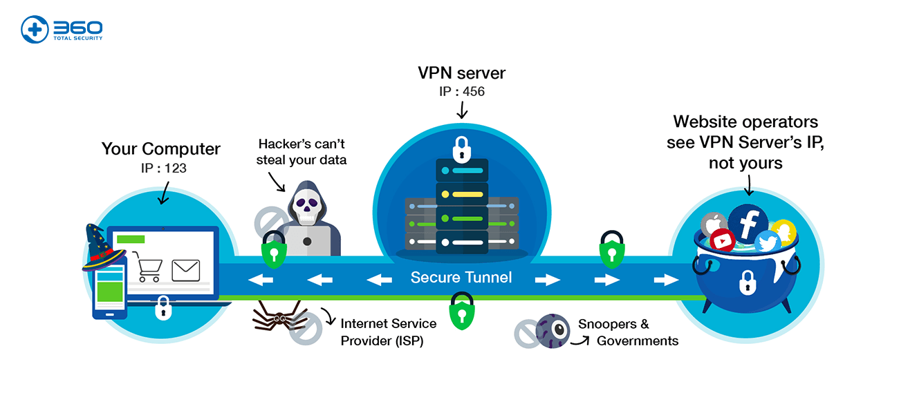
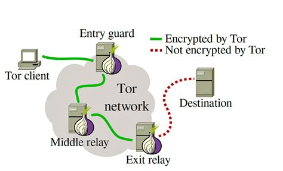

Staying Hidden - A Guide to Basic and Advanced Anonymity
Lots of people do not know how to be hidden online, so I made this simple guide on some easy-to-advanced measures you can take.
I do not support illegal use of this infomation. That being said, if you feel unsafe this infomation is on my own website under soulsender.github.io which is not associated with any external websites. Unless you have a comprimised Root Certificate, nobody can directly see you are reading this article, they only know you are on my website.
Be wary that the domain name of any website is readable. For getting around this, see the VPN section for minimal suspicion.
Please note that for the sake of simplicity, I have trivialized some aspects of the following technology in the hopes that it will be more understandable for the general audience. That being said, if something is not right with something I've written, you may contact me at soulsender@tutanota.com.
I encourage you to read the entire thing if you feel seriously threatened, as understanding these concepts will help you in your privacy, but I've inculded a TL;DR (Too Long, Didn't Read) at the end of the section as well if you don't want to.
Don't use this infomation for evil. I'm doing my best to educate and help people.
Table Of Contents
Abbreviations and Shit
I use a lot of technical abbreviations, you can use this quick guide to know what I am talking about. I explain most of these more in detail in their respective sections.
- Server - A server is just a computer. It could be in "the cloud" or in someone's house, it doesn't really matter. Usually they do not have ordinary interactable components such as keyboards and monitors, but are controlled remotely.
- The Cloud - The cloud is just a server that is rented out to a company or a individual. Some examples of this could be Google Cloud, Amazon Web Services (AWS), or DigitalOcean.
- 2FA - Two Factor Authentication. This is an extra security measure that uses a timed token on a local device to authenticate, as well as standard credentials.
- Network - Like a WiFi network, but includes devices connected via wires like Ethernet. For the most part you can think of networks and wifi interchangably.
- Traffic - Any kind of raw and unencrypted infomation. This could be website connections, wifi connections, etc.
- VPN (Virtual Private Network) - A secure connection to a server from a client.
- IP (Internet Protocol) Address- A string of numbers that computers use to talk to each other. It can be used to track your geographical location and internet traffic.
- OpSec (Operational Security) - Basically how hard it is to find infomation about a person online. In the context of this article, it includes how hard it is for forign entities to find you.
- Open-source - The code is freely available to view and edit. This makes it hard to include spyware inside. Open-source = good.
- Tor (The Onion Router) - A specialized protocol where layers of encryption are used to make it increasingly difficult to find the source of the traffic.
- The Darkweb - Any website that ends in .onion.
- HTTPS (HyperText Transfer Protocol Secure) - What most modern websites use standard. All traffic is encrypted.
- HTTP (HyperText Transfer Protocol) - The old and outdated version of HTTPS. It is NOT encrypted, and is not secure or private. Avoid these websites.
Signal the Secure Messager App
Unlike WhatsApp, Telegram, Instagram Messager, iMessage, etc., Signal is a open-source messaging app. This means that the code is available for anyone to look at. This means that it is more secure, and more private than other closed-source apps like the ones listed above. It cannot have secret hidden backdoors for the government to be listening in, because it is quite literally not written into the code of the app.
Signal also uses End-2-End (E2E) encryption. Unlike other messager apps that use traditional encryption like Facebook and Apple, the messages you send only YOU and the recipient can see. This works because you are generated a special key (public and private versions) that you exchange with the recipient. This is actually quite an old process, and you can do it manually using something like GPG, although this manual process won't be practical for daily use.
As is proven in this article, Signal does not take any more infomation than is required, and will not give it to the United States government. Additionly, they work with the ACLU (American Civil Liberties Union).
Signal comes with some quirks and features for anonymity, you can set it to automatically delete messages after a certain timeframe. You can also set it to require a PIN by going Settings > Privacy > Screen Lock.
(And for all the nerds out there, yes, I know Matrix exists, but no normal end user is going to be able to set up their own self-hosted Matrix server)
TL;DR
Signal is open-source and is not used to spy on users. It truly does not collect infomation aside from last login connection, and date of account creation. It's traffic is secured via E2E encryption.
VPNs and Misinfomation
VPNs are one of the most generally misinformed pieces of technology security ever made. Many advertisers such as NordVPN, ExpressVPN, PrivateInternetAccess, etc., straight out lie to their customers, so I will go into the myths and truths of VPNs here. Tom Scott made a very good video about this as well. 
Myths
- All your traffic is unencrypted and freely available for attackers - Most modern internet connections use HTTPS and not the outdated HTTP protocol. See domain names for more infomation about the difference.
- They will not give out data - Most VPN companies will absolutely give your data to law enforcement if asked. I will go into more details about this later on.
- They do not keep logs - Almost all VPN companies keep logs of their users activity for legal reason. The basic premise is instead of giving your internet traffic to your Internet Service Provider, you give it to this VPN company.
- They use "military grade" encryption - There is no "military grade" encryption, VPN connections use the same kind of encryption that anything else does (which is basically impossible to crack with modern computers). This encryption is no harder to break than standard HTTPS encryption.
Truths
- It changes your location - Yes, this is the true point of VPNs. Their true and original purpose was not for specifically security, but to gain access to a network from outside the network. If you had a server on a network and you were outside the network and wanted to access it, you would connect to a VPN server inside the netowrk and you would have access to all those device on that network.
- It gives you the server's IP address - Any website that you visit will see the VPN server's IP address and not your own.
- The network you are on can see you are using a VPN - Any network you are on will be able to see that you are making a VPN connection. They cannot see what the contents of the traffic are, but they do know that you are not using standard HTTPS/HTTP.
- It encrypts your traffic - VPNs will actually encrypt your traffic, although most times it isn't super useful. The most common use case for this is if you are visiting a HTTP site that does not support HTTPS.
My Personal Trusted Providers
(this is not sponsored, these are genuinely good)- (PAID) Mullvad VPN - I would not use VPNs for full anonymity. See The Darkweb and Tor for more infomation on why. That being said, Mullvad is open-source, uses a open-source VPN protocol of which you can choose between, is able to be paid for in Monero which is the most private cryptocurrency (fuck bitcoin), and also hard cash via mailing. It is also based primarily in Sweden, and not American giving it Swedish privacy law jurisdiction. It is also CHEAPER than NordVPN, ExpressVPN, etc.
- (FREE) ProtonVPN - I generally do not trust free VPN services, I don't even trust most paid VPN services. That being said, if you are not able to pay for Mullvad, or you don't want any sort of transaction to be made, then ProtonVPN would be my suggestion. It's open-source, and Swiss-based, giving it access to Swiss privacy laws.
TL;DR
VPNs are very misinformed. They will change your virtual location. They will use the VPN server's IP address. VPN providers will keep logs, and they will give those logs to law enforcement. They are not initially meant for anonymity and privacy.
The Dark Web and Tor
It's not dangerous if you're not stupid.
Tor - The Onion Browser
This is where your anonymity starts to get serious. The Tor browser is a special browser specifically designed to be completely anonymous (it's actually a forked version of Firefox if you can believe it). There is nothing illegal about downloading and using Tor (depending on where you live this might differ). Tor is actually funded by the United States government (I'll explain this later and why it's ok).The Tor Browser uses a special type of technology called Onion Routing. This is named after an onion, because this type of routing uses "layers" to mask the user's traffic. 
This traffic is encrypted in a multi-layer way, where the relays cannot see past the next connected relay. The only thing the first relay will see is where the data is coming from, and the location of the next relay. The relay after that one will only see the relay before, and the relay after, but not the source of the data. This continues, until the last relay can see the destination of the traffic, but not the origin. Typically there will be 3 relays by default, but you could increase this at the cost of the speed of the connection.
Tor with a VPN (don't do it)
Some people say you should use tor with a VPN for "maximum" privacy, but this is not true, and might compromise your security.On this page on the tor wiki, they explain why you should not do this.
"You can very well decrease your anonymity by using VPN/SSH in addition to Tor. (Proxies are covered in an extra chapter below.) If you know what you are doing you can increase anonymity, security and privacy.In short, using Tor is completely anonymous, while using a VPN only hands your infomation to the VPN provider. This completely defeats the purpose of Tor, and is unnessesary.
Most VPN/SSH provider log, there is a money trail, if you can't pay really anonymously. (An adversary is always going to probe the weakest link first...). A VPN/SSH acts either as a permanent entry or as a permanent exit node. This can introduce new risks while solving others.
Who's your adversary? Against a global adversary with unlimited resources more hops make passive attacks (slightly) harder but active attacks easier as you are providing more attack surface and send out more data that can be used. Against colluding Tor nodes you are safer, against blackhat hackers who target Tor client code you are safer (especially if Tor and VPN run on two different systems). If the VPN/SSH server is adversary controlled you weaken the protection provided by Tor. If the server is trustworthy you can increase the anonymity and/or privacy (depending on set up) provided by Tor.
VPN/SSH can also be used to circumvent Tor censorship (on your end by the ISP or on the service end by blocking known tor exits)."
- Alexander Færøy on the Tor Wiki
Just like in the VPN section, I will do a overview of Truths and Myths of Tor.
Myths
- You are at risk while using Tor - Some people have the strange and irrational idea that while using Tor, you are making yourself more vulnerable to evil hackers and the like. This is not true, and is a total myth. The only thing leaving and entering your network is the Tor requests. These are obviously encrypted.
- You are completely anonymous while using Tor - As much as I wish this wasn't true, there is no totally anonymity. There will always be something to trace back, whether that be a end user mistake or a mistake on the software. There is a potential way to reverse-engineer Tor connections, by tracking the data from the exit node. Fortunately, this has never been done to my knowledge.
- Running Tor as a service on Linux enables it - This is false, running a Tor daemon DOES NOT make your traffic go through the Tor network. Only using specific tools such as the Tor browser itself, or something like proxychains will do this.
- Tor has NSA backdoors - This is a myth. See the truth about this below.
Truths
- Tor is funded by the American government - Yes this is true. Tor is funded by the American government. The reason for this, is because when Tor was developed, the creators realized that if the technology was only available to America, it would be quite clear where traffic was coming from. The solution to this was to release it everywhere, China, Russia, Brazil, worldwide it is used to avoid censorship, to troubleshoot, to provide an extra layer of privacy for the paranoid, and do evil things unfortunately. As the Tor browser is open-source, it is highly unlikely there would be any backdoors in the protocol and browser, and to this day none have been found.
- Clearnet sites work on Tor - Most clearnet websites work fine with Tor, unless they have a blocker for Tor. Sometimes you can run into issues with things like cloudflare, as website can very easily tell you are using a Tor connection, although they would not know where from of course.
- Tor is a fork of Firefox - Tor is actually a fork of Firefox. Firefox is open-source, and Mozilla has no relation with the Tor project.
TL;DR
Tor is pretty much the end-all of online privacy. It uses multiple layers of encryption, in a way where the source and destination are nearly impossible to both locate. It has not been cracked, and any faults are due to the end user and not the protocol.
Circumventing Censorship
Censorship is when you aren't able to visit a website or use a service because a firewall is blocking you. Perhaps this is because you are at school, and your sysadmins don't want you looking up questionable stuff. Or maybe it's because you live in a dictatorship regime; in which case somehow you are reading this. The following methods should work for both.
DISCLAIMER: This comes with risks. This may get you in trouble depending on where you live, and unfortunately this relies on some websites to not be blocked which you will have to vist, so it's likely that you could be exposed during the setup of this process.
Method A - Tor Browser With a Bridge
I would recommend this way first, as it is free but it relies on Tor and Tor traffic not being blocked already. First, download the Tor Browser. DO NOT USE ANY OTHER WAY OF ACCESSING TOR. Do not use Brave, do not use proxychains, only use Tor. This is because using a different client makes you stick out like an ass and will compromise you.If the previous URL was blocked for you, you may use either this link or this link. In addition, you may use GetTor with the following steps.
Once you have the browser downloaded, go to the settings in the top right corner. Click on the Tor icon labeled "Connection". I suggust you have "always connect automatically" checked. You may set a bridge in the menu below. Click "select a built-in bridge". You may try obfs4, Snowflake, or meek-azure. I recommend Snowflake, however you may try the other two if needed.Send a request to gettor@torproject.org specifying your operating system (and your locale). Ex: "windows es" GetTor will send you back a reply with links to download Tor Browser from supported providers. Download Tor Browser from one of the providers. When done, check the integrity of the downloaded file by verifying its signature. (Optional but recommended) In GetTor emails there will be a link to a file with the same name as the package and the extension ".asc". These .asc files are OpenPGP signatures. They allow you to verify the file you've downloaded is exactly the one that we intended you to get. For example, torbrowser-install-win64-8.5.4_en-US.exe is accompanied by torbrowser-install-win64-8.5.4_en-US.exe.asc
Method B - VPN With Obfuscation
In the case of Tor not working at all, you not being able to obtain it, or it is too slow for your use case, you may try a VPN with Shadowsocks obfuscation. Normally VPNs will leave a trace of OpenVPN or Wireguard encrypted traffic. While traffic sniffers can't see what the actual traffic is, they can see that it is a VPN connection, and block it. If this happens, you might want to use Shadowsocks.Shadowsocks makes the traffic look similar to DNS traffic or something similar, and not like VPN traffic. Many VPN providers will have this feature built into their application. I suggest a Mullvad subscription paid with Monero for maximum anonymity. As with the previous sections, I am not sponsored by Mullvad. I genuinely like their product more than other products. Though Mullvad will still have your IP address, it is unlikely they will give it to a dictatorship regime as they do not actively have a presence in that country. You may view this article for a tutorial.
I have set up two Snowflake proxies, and one Signal proxy as well.